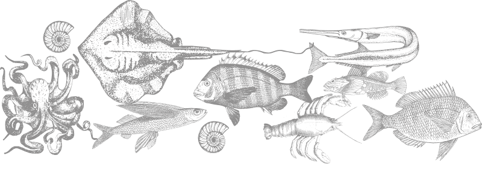

Тріска
Лосось
Скумбрія
Блакитна мідія
Коричневий краб
Восьминіг
Норвезький омар
Морський гребінець
Морський біс
Палтус
- Сезон Круглий рік, але краще всього восени.
- Діапазон улову Уздовж норвезького узбережжя.
- Поживні речовини Вітаміни А, В1, В6, В12, D, E, РР, натрій, калій, кальцій, залізо, магній, фосфор.
Тріска
Тріска - це морська риба сімейства осетрових, яка водиться в помірній області вод Атлантичного океану. У довжину риба може бути до двох метрів, промислові ж особини мають приблизно 40-80 см у віці від 30 до 10 років. Атлантична тріска розмножується біля берегів Норвегії, а відгодовується у Баренцовому морі і на мілководді у Шпіцбергена. Основні нерестовища цієї тріски знаходяться у Лофотенских островів(Норвегія).
- Сезон З червня по вересень
- Діапазон улову У Олесунне, Бергене і на Лофотенских островах.
- Поживні речовини Вітамін В12, а також фосфор, селен, хром, йод, кальцій, магній.
Лосось
Відколи в XIX столітті британці відкрили для себе норвезькі річки, багаті лососем, сюди щорічно прагнуть тисячі рибалок, та і самі норвежці охоче беруть участь в промислі лососевої риби. Проте, якщо раніше ця риба була для людей головним джерелом їжі, то сьогодні це більше престижний трофей.
- Сезон З червня, та триває по листопад.
- Діапазон улову Уздовж норвезького узбережжя а також в протоці між Скандинавським півостровом та Ютландией.
- Поживні речовини Вітаміни В12, D, B2, B5, B6, РР, а також фосфор, селен, хром, йод, кальцій, магній.
Скумбрія
У Норвегію часто їдуть для того, щоб насолодитися не лише природою, але і морською риболовлею, яка не вимагає ліцензії і є безкоштовною. Тут можна випробувати спортивний азарт і отримати безліч незабутніх вражень. Не дивлячись на те, що в Норвегії скумбрія зустрічається по усьому узбережжю, найбільше вона поширена в середніх і південних областях, наприклад в Осло-фьорде. У північних районах її значно менше.
- Сезон З літа по осінь.
- Діапазон улову Уздовж норвезького узбережжя.
- Поживні речовини Натрій, калій, кальцій, магній, йод, вітаміни В1, В2, B6, PP.
Блакитна мідія
Людство споживає мідії споконвіку. Вони вважаються древнім делікатесом. Мідія - двостулковий молюск - водиться майже в усіх прибережних зонах Світового океану. Щорічно у всьому світі добувається більше 12 млн. тонн молюсків.
- Сезон Круглий рік, але краще всього восени.
- Діапазон улову Уздовж норвезького узбережжя.
- Поживні речовини Білок, вітамін B12, селен
Коричневий краб
Щоб упіймати коричневих крабів, вам не знадобиться більше нічого, окрім ліхтарика та швидких рефлексів. Останнє, що бачать коричневі краби, - це спалах і швидку руку. Але ви повинні діяти швидко: через секунду або дві краб розуміє, що відбувається, і використовує свої кігті, щоб ущипнути Вас щосили, і він не відпустить Вас легко. Таким чином, лов крабів не лише забезпечує смачну їжу, але і викликає викид адреналіну.
- Сезон Круглий рік, але краще всього влітку.
- Діапазон улову Уздовж норвезького узбережжя.
- Поживні речовини Білок, магній, кальцій, натрій, калій, залізо, фосфор, мідь, селен і марганець, вітамінів групи В, А, С, Е, К, РР.
Восьминіг
Полювання на цього розумного хижака можливе цілий рік, але краще вибирати теплішу пору року, коли він полює на мілинах. Пошуком своїх жертв восьминіг займається в темний час доби. Восьминіг вважають делікатесом. У середземноморських країнах його готують, як основне блюдо або закуску.
- Сезон Весна, літо.
- Діапазон улову Уздовж норвезького узбережжя.
- Поживні речовини Білок, вітамін B12
Норвезький омар
У кулінарії задня частина норвезького омара вважається делікатесом, тоді як його тонкі клішні на відміну від інших видів омарів не містять придатного до вживання м'яса. Норвезький омар часто пропонується під різними назвами. У Італії його називають "скампи", у Франції - "лангустин".
- Сезон Цілий рік.
- Діапазон улову Уздовж норвезького узбережжя.
- Поживні речовини Йод, марганець, залізо та інші важливі для здоров'я людини мікроелементи.
Морський гребінець
Морський гребінець відноситься до сімейства морських двостулкових молюсків. Серед різноманіття морепродуктів унікальні якості має морський гребінець - головоногий молюск, в якому практично відсутній жир, а ось білку предостатньо. З 350 видів цього сімейства молюсків їстівними є тільки три: "Lima", "Spondylus" та "Pecten".
- Сезон Цілий рік
- Діапазон улову Біля берегів областей Сон-ог-Фьоране і Мере-ог-Ромсдал
- Поживні речовини Білок, вітамін B12, селен
Морський біс
Норвежці пристосувалися ловити морського біса сіткою. На гачок зловити дорослу особину можна, але зробити це досить складно із-за великих розмірів. Риба любить глибину. У морях вона мешкає на глибині до 600 метрів. І якщо упіймати такого красеня можна, то приготувати - завдання не з простих. Їстівна частина морської риби - тільки хвіст. При цьому голова з сотнями гострих зубів складає половину усієї її довжини. При цьому по усій довжині спини морський біс так і намагається вколоти рибалку гострими тонкими колючками.
- Сезон З грудня по квітень(час нересту, коли риба піднімається вище).
- Діапазон улову Біля берегів Норвегії, Фареры, водний розділ з Гренландією.
- Поживні речовини Висока кількість вітамінів А і Д
Палтус
Палтус - різновид промислової морської риби, що мешкає в глибинах норвезьких вод. Великі особини(вагою до 300 кг, завдовжки до 3 метрів) мешкають виключно на дні моря, зариваючись в пісок. Глибина мешкання - не менше 300 метрів від поверхні води. Дрібніші особини мешкають в прибережних водах. Користь палтуса неможливо переоцінити. Вірогідність лову дуже великої, трофейної особини, досить низька. Риба повільно росте, тому процес лову цього виду риби строго контролюється норвезькими посадовими органами.
- Унікальна різноманітність
- Екологічне споживання
- Краща якість
- Ідеальні умови для вирощування
Екстремальні умови для людини. Ідеальні умови для риб.
Гольфстрім, що несе теплу воду з Мексиканської затоки через Атлантичний океан, тече на північ уздовж норвезького узбережжя в прозору, чисту крижану воду Арктики. Це створює ідеальні умови для неймовірно багатої морської екосистеми.
Дрібна риба, велика риба, молюски та інші форми життя. Деякі з них - місцеве населення, інші - мігрують або перепливають через земну кулю. Деякі віддають перевагу холодному відкритому морю, інші живуть в тихих глибоких фьордах, захищених стіною островів і шхер. Кожен з них грає свою роль в складному і захоплюючому морському життєвому циклі.
Різноманітність морепродуктів з цього середовища унікальна. Це одна з головних причин, чому Норвегія є другим за величиною експортером морепродуктів у світі. І є також причина, по якій кухарі та знавці всього світу вибирають морепродукти з Норвегії : вам буде складно знайти такий же вибір і якість де-небудь ще.

Краща якість морепродуктів
Норвезькі морепродукти - це якісні морепродукти, і ми раді ними поділитися. Ось чому нашими морепродуктами насолоджуються у всьому світі. Міжнародне значення цієї галузі наочно демонструє той факт, що норвезькі морепродукти подорожують приблизно в 150 країн. Ми другий за величиною експортер морепродуктів у світі.
Екологічне споживання
Прекрасна прибережна природа Норвегії і різноманітність життя, яку вона підтримує, - це основа нашого існування з кам'яного століття. Ми знаємо, що зобов'язані передати це майбутнім поколінням. Море - це дар, який продовжує дарувати, але тільки до тих пір, поки ми продовжуємо поважати його і дбайливо відносимося до того, що нам було дано.
Ідеальні умови вирощування
Норвегія має одну з самих передових і добре таких, що зарекомендували себе систем стійкого розвитку і управління як в рибальстві, так і в аквакультурі. Це не випадковість, а систематична робота на усіх рівнях, безпека споживачів, що забезпечує, і благополуччя риб.
Великий упор на благополуччя тваринних і суворі правила означають, що наші морепродукти незмінно високої якості і безпечні для вживання. Виробництво є екологічно безпечним і відповідальним, залишаючи мінімальний слід на довкілля.
Ви отримуєте самі кращі морепродукти Неважливо, що це за морепродукти, тому що вони норвезькі, а значить - самої кращої якості.
У Норвегії холодно. Дуже холодно.
- Зв'язатися з нами: mail@seafood.no
- Телефон: +47 77 60 33 33
-
Норвезька рада з морепродуктів:
Stortorget 1
PO Box 6176
N-9291 Tromsø